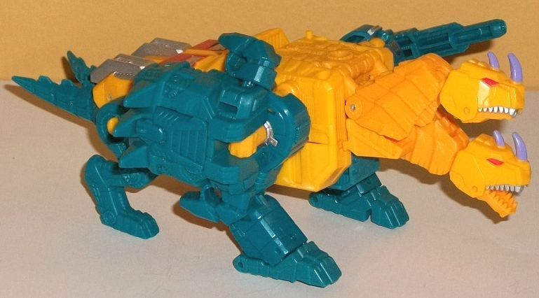
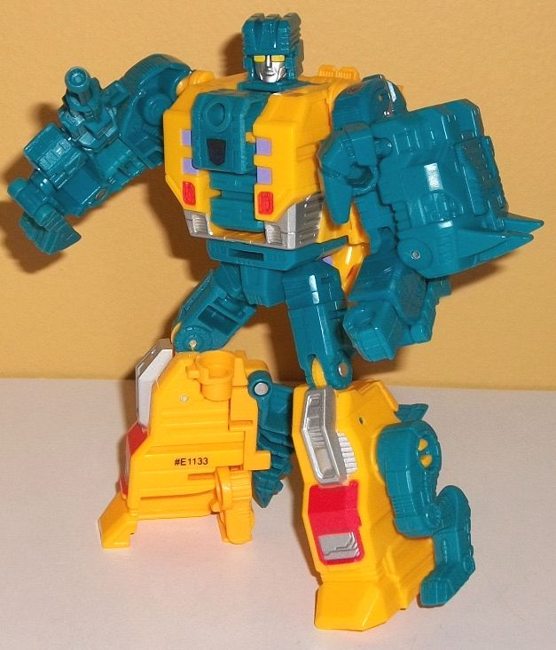
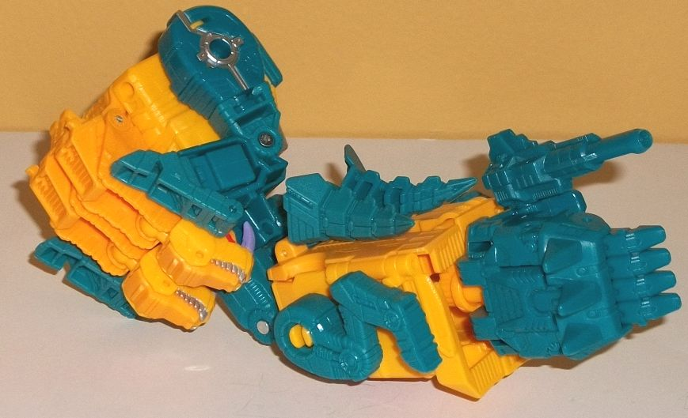
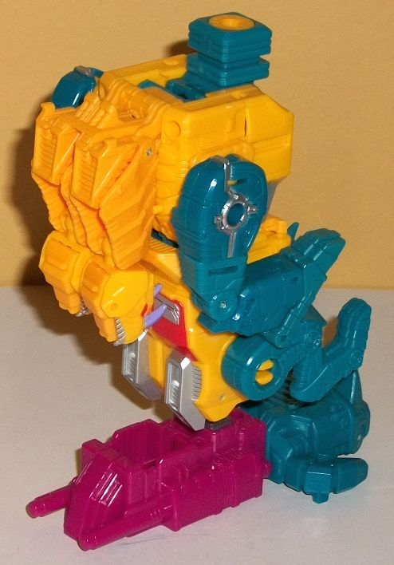

Allegiance
: Decepticon
Size
: Deluxe
Difficulty of Transformation to Robot:
Easy
Difficulty of Transformation to Leg
:
Very Easy
Difficulty of Transformation to Arm
:
Very Easy
Color Scheme
: Dull "cheesy" orangish
yellow, dark teal, milky dark teal, and some silver, red, and light pale
purple
Rating:
8.5


No longer "
Twinstrike
",
it looks like Hasbro got back the Sinnertwin name (or at least they found
they could get away with it just by sticking "Terrorcon" in front of his
name on the package). Anyways, in alt mode Sinnertwin is a double-headed
dragon of the no-winged, two-tailed variety. The body is maybe a tad oversized--
or the rear legs a bit undersized-- and his tails could stand to be a bit
longer as well. Otherwise, proportionally he's pretty good. The only robot
mode extras in this mode are that, given the way his body comes together,
the toes on the robot feet are rather obvious on the middle-- they don't
quite "mesh" with the rounder front section of the main body. Otherwise,
no extras in this mode. The mold detailing is quite good, with lots of
armor-like ridges and crooked lines all over the heads and tails, and lots
of circuitry-like or robotic details on the main body. The legs also have
some things like pistons and the like molded into them; they look great.
The color scheme is pretty much either a dull orangish-yellow or a dark
teal, which is used on the legs. It should be noted, however, that there
are two slightly different shades of teal-- there's a slightly milkier
shade on some parts, and a more straightforward shade on some others. Oddly
I see this on a few of the orange-yellow parts as well, but it's so slight
I don't even know how to describe it-- I guess one shade is ever so SLIGHTY
more orange, but still orangish-yellow. It's kinda weird, but easily overlooked.
Both main colors complement each other pretty nicely, but the main body--
especially the upper body-- could've used a bit more paint or something
to breakup all that yellow (and it's got loads of mold detailing to highlight).
As for the paint, in this mode there's some silver on the rear sections
that become the rear robot legs, a bit on the stomach that becomes the
robot chest, and some silver on the top of the front legs and on his teeth.
There's also some red on the rear portion of the body and the eyes, and
some nice light pale purple that looks quite nice on the horns; I wish
it was used a bit more elsewhere. Overall a pretty solid scheme, if not
particularly mind-blowing. For articulation in this mode, Sinnertwin can
move at each neck (at two points), at each jaw, at the shoulders, front,
knees (at two points), and back-and-forth at the hips. Unfortunately beyond
the hips there's no rear leg movement, and his tails don't move either--
a minor disappointment. Sinnertwin comes with two accessories; a rather
long-barreled blaster, and his Prime armor. There's a port on the side
of each upper front leg for either, as well as a port on the top middle
of his upper body. I prefer to put the Prime armor piece up there, as it
help breaks up all the yellow with its dark teal coloration and doesn't
look COMPLETELY out-of-place there, even though this means Sinnertwin ends
up looking asymmetrical with his blaster on one side but not the other.
There's also two little ports for a Prime or Titan Master to stand on in
this mode, near the sides of the upper back.
To transform Sinnertwin
to robot mode, you do a couple of flips to turn his front legs into his
arms, unfold his legs out from the rear portion of the body (tucking the
rear legs and tails to the side/back), and then just unceremoniously flip
back the beast heads behind the back and flip out the robot head. For such
a fierce beast mode, Sinnertwin has a very unremarkably, decidedly un-monster-y
robot mode, which is par for the course for the Terrorcons. I don't like
how 2-D the upper arms look-- I also wish they were "filled in" on the
inside rather than hollow (and it's here you can see he takes a few minor
pieces from
Snarl
)-- but otherwise his proportions
are pretty good in this mode, albeit with a chest that's a bit more of
a barrel-chest than most TFs. Because of how straightforward the transformation
is, most of the beast parts are pretty obvious-- he's got the beast paws
just hanging there off the lower arms, for example, which doesn't look
great. What looks worse are the rear beast legs just right there on the
sides of his lower robot legs, almost like he has four legs down there.
The tails hang off the back end of the lower legs, but at least they're
behind the back and don't really get in the way of movement much. The twin
heads behind his back I feel a similar way towards-- yeah I wish they had
a better way of folding out of sight, but they don't get in the way much
or stick out a whole lot given their size. Given the transformation, not
as much is new in this mode compared to the beast mode, but the colors
are a bit more tilted towards the dark teal than the yellow because most
of the robot-specific parts are in that color. The chest details are pretty
basic and look straight outta G1, with some basic purple squares and some
red vent-like structures, but not much else on there. The robot head looks
incredibly generic, with a triangular decoration on the forehead, little
indentations on the sides of the helmet, and a "normal" silver face with
large, orange-yellow eyes. He has a very neutral expression-- no real personality
to it at all, unfortunately. There's also a Decepticon sticker emblem in
the middle of his chest-- not sure why paint wasn't just used, but whatever.
For articulation in this mode, Sinnertwin can move at the neck, shoulders,
elbows (at two points), inwards slightly at the wrists, rotation at the
waist, and movement at the hips (at two points) and knees. Like other deluxe
PotP toys, you can fit his Power armor onto his chest in this mode, but
it just makes his chest look even more barrel-like and an obvious extra,
so I just kinda like to keep it attached to a shoulder like it's some spiked
shoulder guard or something.


For arm mode, take the
robot mode and flip in the robot head while flipping out the combiner port
so it points out of the chest. Put the lower arms back into their beast
mode configuration, then rotate them backwards, where there's a little
peg for them to stick into, to keep them secure. For the lower section
it's even simpler; just combine the two legs together while rotating out
the small fold-down piece that allows you to stick the Prime armor piece
into the bottom to form the hand. The upper beast legs are definitely the
worst part of this mode, as they stick out really obviously and distract
what could be a decent addition to the silouhette of the shoulder-- the
twin beast heads. The rear beast legs do stick out of the sides of the
lower arms, but not anymore than they do in robot mode, and given the orientation
of them in this mode (usually; I mean, you tend to want the arms pointing
forward), they don't bug me as much as those upper beast legs. The twin
tails also stick out a bit and can get in the way of articulation slightly,
but aren't a huge deal. The overall proportions of the upper arm to the
lower arm are good, though, and the color balance remains pretty decent
for Sinnertwin in this mode as well. Just with other PotP deluxes in arm
mode, in this mode Sinnertwin can move at the shoulder (at two points),
elbow (at two or three points, depending upon how you orient the lower
arm), rotation at the wrist, and movement at both thumbs and at the base
of the fingers (all four fingers as one piece).
Sinnertwin's leg mode
is pretty much just his beast mode, with the two heads folded back and
the combiner peg folded up in its place, while the two tails are folded
up against the underside of the body. Then just reorient him so that the
combiner peg is facing the top, and peg in the Prime foot piece at the
bottom. There are small slots for the front legs to slide into, but the
rear legs just kinda hang out there, not pegging into anything or locking
into place. The core "block" of the leg mode is pretty solid, but those
legs on the side are a bit of an eyesore-- whether they're fit into a certain
position or not. The twin beast heads do make for a nice front to the leg,
however. The tails behind the leg do stick out a little, but are pretty
small, so they're a pretty minor issue overall. As with basically all PotP
leg modes, in this mode Sinnertwin can move at the knee (at two points)
and has rotation and slight tilting at the ankle because of how the foot
piece plugs in.
PotP Sinnertwin has a great beast mode (though it could have used a bit more articulation), though a rather generic robot mode, with a fairly bland transformation that just has much of his beast parts just hanging off of him. His leg mode is okay, though with his arm mode the beast appendages can be a little bothersome visually. That said, his proportions are largely great, he's got a pretty decent color scheme with some nice accents, and great articulation. My favorite of the deluxe PotP Terrorcons, if for no other reason than his main two modes actually look substantially different from each other.
Review by Beastbot